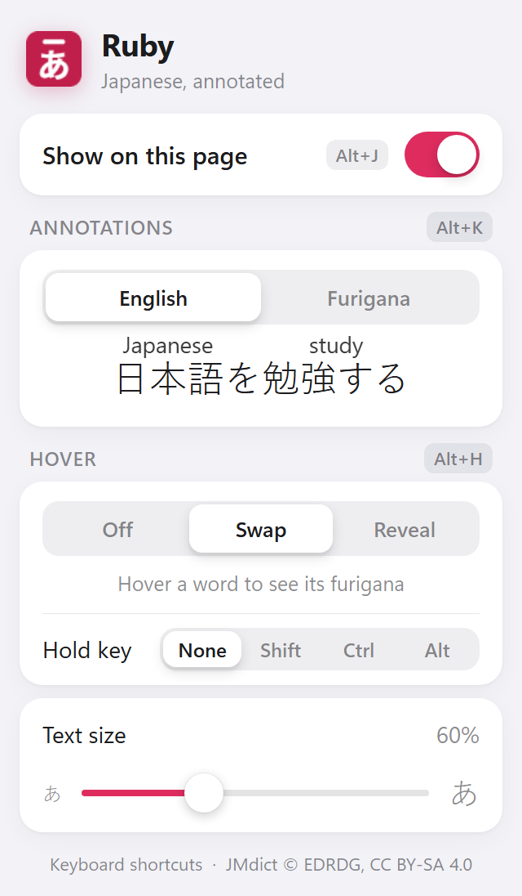

Make it yours
Everything in one simple panel.
あEnglish or furigana
↔Swap or reveal on hover
AAdjustable text size
⌨Keyboard shortcuts for everything
Read any Japanese website with instant translations, right where the words are.
今年は暖かい日が続いたため、桜が早く咲きました。週末には、多くの人が公園でお花見を楽しむ予定です。
美しい景色を写真に撮る人も多いそうです。
夜には、ライトアップされた桜も楽しめます。
今年は暖かい日が続いたため、桜が早く咲きました。週末には、多くの人が公園でお花見を楽しむ予定です。
美しい景色を写真に撮る人も多いそうです。
夜には、ライトアップされた桜も楽しめます。
Peek at readings, or hide everything and check only the words you need.
彼女はピアノを習っています。
毎日一時間練習しています。
彼女はピアノを習っています。
毎日一時間練習しています。
Everything in one simple panel.
